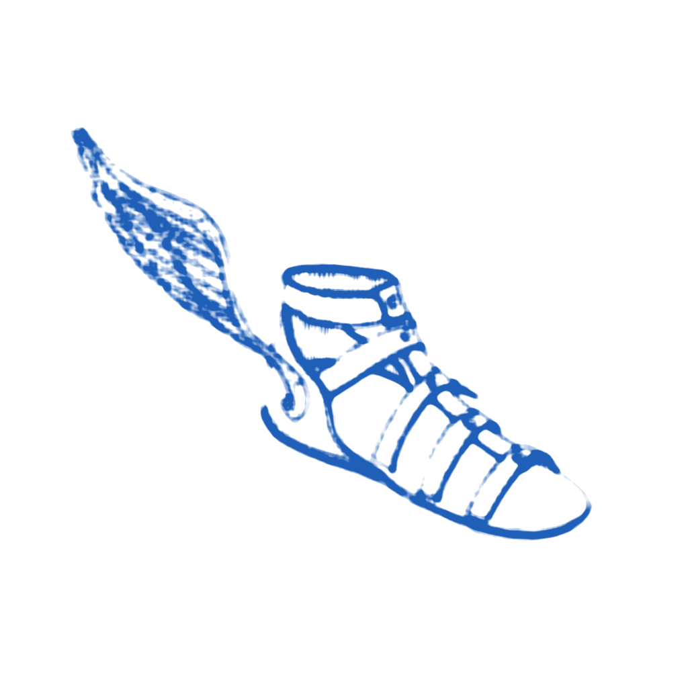
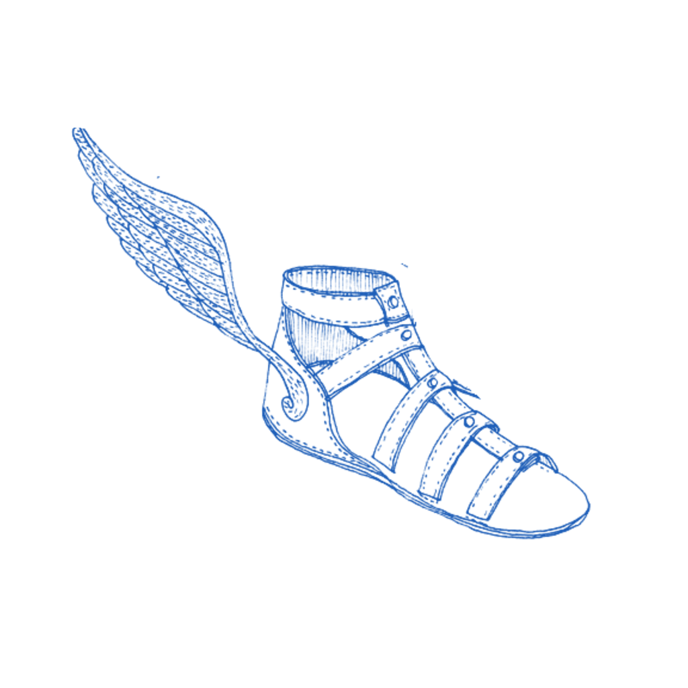
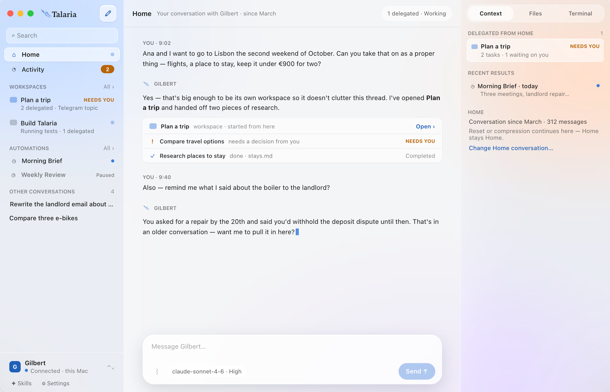
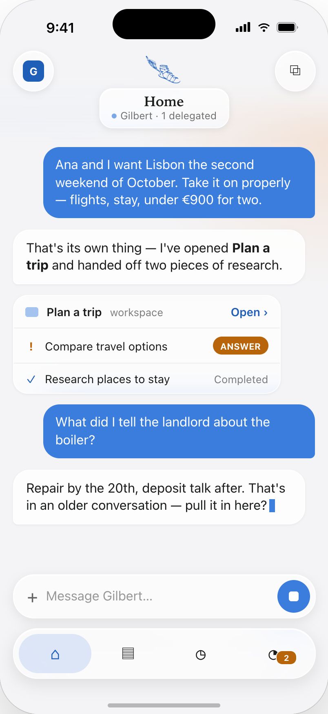
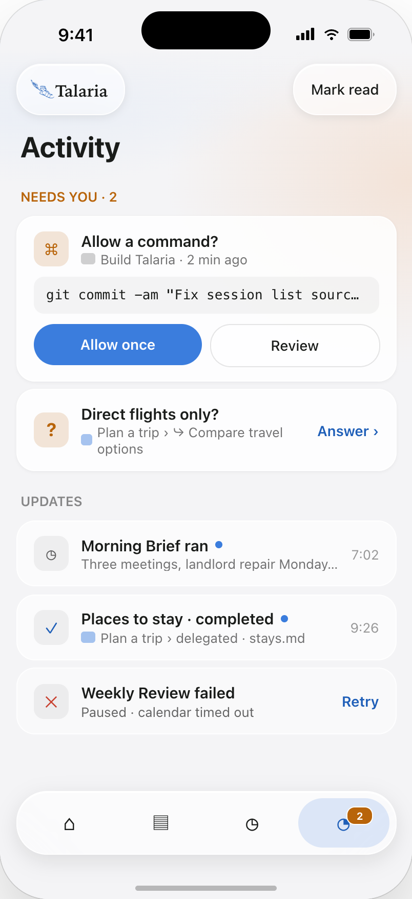

Home
One conversation, chosen by you, pinned first. It never gets buried under yesterday's sessions, and everything your agent takes on links back to it.

Talaria
One conversation you always come back to. Workspaces for the big things. Automations that report back. Talaria puts your agent where you already work — on the Mac and in your pocket.

One conversation, chosen by you, pinned first. It never gets buried under yesterday's sessions, and everything your agent takes on links back to it.
A trip, a codebase, a move. Each one keeps its conversation, delegated tasks and files together — and tells you when it needs a decision.
Standing instructions on a schedule. Every run lands as a result you can read first and discuss in Home — not as another chat.
When a task needs a decision — allow a command, pick between two flights — it shows up in Activity with the choices intact. Answer from the phone; the Mac keeps working.



Mac first, iPhone right behind. Open source, built on Hermes — bring your own model and profile.